7.1 Translate text with Transformer
Created Date: 2025-07-15
This tutorial demonstrates how to create and train a sequence-to-sequence Transformer model to translate Portuguese into English. The Transformer was originally proposed in "Attention is all you need" by Vaswani et al. (2017).
Transformers are deep neural networks that replace CNNs and RNNs with self-attention . Self-attention allows Transformers to easily transmit information across the input sequences.
As explained in the Google AI Blog post :
Neural networks for machine translation typically contain an encoder reading the input sentence and generating a representation of it. A decoder then generates the output sentence word by word while consulting the representation generated by the encoder. The Transformer starts by generating initial representations, or embeddings, for each word... Then, using self-attention, it aggregates information from all of the other words, generating a new representation per word informed by the entire context, represented by the filled balls. This step is then repeated multiple times in parallel for all words, successively generating new representations.

Figure 1 - Applying the Transformer to Machine Translation
That's a lot to digest, the goal of this tutorial is to break it down into easy to understand parts. In this tutorial you will:
Prepare the data.
-
Implement necessary components:
Positional embeddings;
Attention layers;
The encoder and decoder.
Build & train the Transformer.
Generate translations.
Export the model.
To get the most out of this tutorial, it helps if you know about the basics of text generation and attention mechanisms .
A Transformer is a sequence-to-sequence encoder-decoder model similar to the model in the NMT with attention tutorial. A single-layer Transformer takes a little more code to write, but is almost identical to that encoder-decoder RNN model. The only difference is that the RNN layers are replaced with self-attention layers. This tutorial builds a 4-layer Transformer which is larger and more powerful, but not fundamentally more complex.


Figure 2 - The RNN+Attention Model|A 1-layer Transformer
After training the model in this notebook, you will be able to input a Portuguese sentence and return the English translation.

Figure 3 - Visualized Attention Weights
Why Transformers are significant:
Transformers excel at modeling sequential data, such as natural language.
Unlike recurrent neural networks (RNNs) , Transformers are parallelizable. This makes them efficient on hardware like GPUs and TPUs. The main reasons is that Transformers replaced recurrence with attention, and computations can happen simultaneously. Layer outputs can be computed in parallel, instead of a series like an RNN.
Unlike RNNs (such as seq2seq , 2014) or convolutional neural networks (CNNs) (for example, ByteNet), Transformers are able to capture distant or long-range contexts and dependencies in the data between distant positions in the input or output sequences. Thus, longer connections can be learned. Attention allows each location to have access to the entire input at each layer, while in RNNs and CNNs, the information needs to pass through many processing steps to move a long distance, which makes it harder to learn.
Transformers make no assumptions about the temporal/spatial relationships across the data. This is ideal for processing a set of objects (for example, StarCraft units).

Figure 4 - The Encoder Self-attention Distribution for the Word "it"
7.1.1 Data Handling
This section downloads the dataset and the subword tokenizer, then wraps it all up in a torch.utils.data.Dataset for training.
7.1.1.1 Download the Dataset
File text_translation.py load the Portuguese-English translation dataset TED Talks Open Translation Project. This dataset contains approximately 52,000 training, 1,200 validation and 1,800 test examples.
# 1. Load the dataset
dataset = datasets.load_dataset('ted_hrlr', 'pt_to_en', trust_remote_code=True)
train_examples = dataset['train']
val_examples = dataset['validation']
test_examles = dataset['test']
print(f'Train examples: {len(train_examples)}')
print(f'Validation examples: {len(val_examples)}')
print(f'Test examples: {len(test_examles)}')Train examples: 51786 Validation examples: 1194 Test examples: 1804
We can print the first example:
print(train_examples[0]){'translation': {'en': "amongst all the troubling deficits we struggle with today — we think of financial and economic primarily — the ones that concern me most is the deficit of political dialogue — our ability to address modern conflicts as they are , to go to the source of what they 're all about and to understand the key players and to deal with them .", 'pt': 'entre todas as grandes privações com que nos debatemos hoje — pensamos em financeiras e económicas primeiro — aquela que mais me preocupa é a falta de diálogo político — a nossa capacidade de abordar conflitos modernos como eles são , de ir à raiz do que eles são e perceber os agentes-chave e lidar com eles .'}}
7.1.1.2 Set Up the Tokenizer
Now that you have loaded the dataset, you need to tokenize the text, so that each element is represented as a token or token ID (a numeric representation).
Tokenization is the process of breaking up text, into "tokens". Depending on the tokenizer, these tokens can represent sentence-pieces, words, subwords, or characters. To learn more about tokenization, visit this guide .
This tutorial uses the tokenizers from the facebook/m2m100_418M . M2M100 is a multilingual encoder-decoder (seq-to-seq) model trained for Many-to-Many multilingual translation.
Note: This is different from the original paper , where they used a single byte-pair tokenizer for both the source and target with a vocabulary-size of 37000.
# 2. Initialize a tokenizer
# We'll use a pre-trained tokenizer suitable for sequence-to-sequence tasks (like translation).
# 'Helsinki-NLP/opus-mt-pt-en' is a good choice for Portuguese to English.
tokenizer = transformers.AutoTokenizer.from_pretrained("facebook/m2m100_418M")
tokenizer.src_lang = 'pt'
tokenizer.tgt_lang = 'en'We can use text "Hello, how are you?" for test:
text = 'Hello, how are you?'
encoded = tokenizer(text, return_tensors='pt')
print('Token IDs:', encoded['input_ids'])
print('Tokens:', tokenizer.convert_ids_to_tokens(encoded['input_ids'][0]))Token IDs: tensor([[128075, 65761, 4, 40288, 4234, 8251, 24, 2]]) Tokens: ['__pt__', '▁Hello', ',', '▁how', '▁are', '▁you', '?', '</s>']
We can find two very interesting phenomena. The beginning and end of the sentence are marked with "__pt__" and "<s>" respectively. There is a "▁" in front of the word, which means that they are not connected to the previous word.
7.1.1.3 Define Custom Dataset
Defines a custom PyTorch Dataset called TranslationDataset . It's designed to prepare text translation data (Portuguese to English) for use in machine learning models:
# 3. Create a custom PyTorch Dataset class
class TranslationDataset(torch.utils.data.Dataset):
def __init__(self, examples, tokenizer, max_length=128):
self.examples = examples
self.tokenizer = tokenizer
self.max_length = max_length
def __len__(self):
return len(self.examples)
def __getitem__(self, idx):
pair = self.examples[idx]['translation']
source_text = pair['pt']
target_text = pair['en']
# Tokenize source and target texts
# add_special_tokens=True adds [CLS] and [SEP] tokens
# truncation=True truncates sequences longer than max_length
# padding='max_length' pads sequences shorter than max_length
# return_tensors='pt' returns PyTorch tensors
tokenized_source = self.tokenizer(
source_text,
max_length=self.max_length,
truncation=True,
padding='max_length',
return_tensors='pt'
)
tokenized_target = self.tokenizer(
target_text,
max_length=self.max_length,
truncation=True,
padding='max_length',
return_tensors='pt'
)
# Remove the batch dimension (squeeze) as __getitem__ expects single examples
return {
'input_ids': tokenized_source['input_ids'].squeeze(0),
'attention_mask': tokenized_source['attention_mask'].squeeze(0),
# For translation, target input_ids are often used as labels
'labels': tokenized_target['input_ids'].squeeze(0)
}The structure returned by __getitem__ is the key input for Transformer model training, including:
input_ids: input sequence of the model (source language);
attention_mask: attention mask, tell the model which tokens are valid (1) and which are padding (0);
labels: target langauge sequence (for training).
7.1.2 Test the Dataset
Before we start training, we can observe the data and understand the input and output of the model.
# 4. Instantiate your PyTorch datasets
max_seq_length = 128 # You can adjust this based on your data and model
train_dataset_pt = TranslationDataset(train_examples, tokenizer, max_length=max_seq_length)
val_dataset_pt = TranslationDataset(val_examples, tokenizer, max_length=max_seq_length)
print(f"PyTorch Training Dataset size: {len(train_dataset_pt)}")
print(f"PyTorch Validation Dataset size: {len(val_dataset_pt)}")Creates two instances of a custom TranslationDataset class: train_dataset_pt and val_dataset_pt .
PyTorch Training Dataset size: 51786 PyTorch Validation Dataset size: 1194
Randomly select a sample and check the shape of the sample output data:
# Example of accessing an item from the PyTorch dataset
sample_idx = random.randint(0, 100)
sample_item = train_dataset_pt[sample_idx]
print("Sample item from PyTorch training dataset:")
print(f"Input IDs shape: {sample_item['input_ids'].shape}")
print(f"Attention Mask shape: {sample_item['attention_mask'].shape}")
print(f"Labels shape: {sample_item['labels'].shape}")Sample item from PyTorch training dataset: Input IDs shape: torch.Size([128]) Attention Mask shape: torch.Size([128]) Labels shape: torch.Size([128])
We can view the information inside:
original_src_text = train_examples[sample_idx]['translation']['pt']
print(f"Original Source Text (PT): {original_src_text}")
src_token_ids = sample_item['input_ids'].tolist()
print(f"Source Token IDs: {src_token_ids}")
attention_mask_values = sample_item['attention_mask'].tolist()
print(f'Attention Mask Values: {attention_mask_values}')
tgt_token_ids = sample_item['labels'].tolist()
print(f"Target (Label) Token IDs: {tgt_token_ids}")The tokenizer converts a batch of strings to a padded-batch of token IDs. This method splits punctuation, lowercases and unicode-normalizes the input before tokenizing, it standardization is not visible here because the input data is already standardized.
Original Source Text (PT): e o núcleo destes agentes-chave são grupos que representam interesses diferentes dentro de países . Source Token IDs: [128075, 16, 25, 136, 10716, 47289, 89539, 543, 2264, 7, 207, 3591, 7611, 27262, 27, 17785, 99, 11737, 50, 15757, 14366, 6, 20594, 237, 2, 1, 1, 1, 1, 1, 1, 1, 1, 1, 1, 1, 1, 1, 1, 1, 1, 1, 1, 1, 1, 1, 1, 1, 1, 1, 1, 1, 1, 1, 1, 1, 1, 1, 1, 1, 1, 1, 1, 1, 1, 1, 1, 1, 1, 1, 1, 1, 1, 1, 1, 1, 1, 1, 1, 1, 1, 1, 1, 1, 1, 1, 1, 1, 1, 1, 1, 1, 1, 1, 1, 1, 1, 1, 1, 1, 1, 1, 1, 1, 1, 1, 1, 1, 1, 1, 1, 1, 1, 1, 1, 1, 1, 1, 1, 1, 1, 1, 1, 1, 1, 1, 1, 1] Attention Mask Values: [1, 1, 1, 1, 1, 1, 1, 1, 1, 1, 1, 1, 1, 1, 1, 1, 1, 1, 1, 1, 1, 1, 1, 1, 1, 0, 0, 0, 0, 0, 0, 0, 0, 0, 0, 0, 0, 0, 0, 0, 0, 0, 0, 0, 0, 0, 0, 0, 0, 0, 0, 0, 0, 0, 0, 0, 0, 0, 0, 0, 0, 0, 0, 0, 0, 0, 0, 0, 0, 0, 0, 0, 0, 0, 0, 0, 0, 0, 0, 0, 0, 0, 0, 0, 0, 0, 0, 0, 0, 0, 0, 0, 0, 0, 0, 0, 0, 0, 0, 0, 0, 0, 0, 0, 0, 0, 0, 0, 0, 0, 0, 0, 0, 0, 0, 0, 0, 0, 0, 0, 0, 0, 0, 0, 0, 0, 0, 0] Target (Label) Token IDs: [128075, 1019, 1197, 89193, 432, 107638, 29031, 898, 20949, 4234, 125115, 72886, 17785, 120954, 120669, 55, 122910, 125204, 237, 2, 1, 1, 1, 1, 1, 1, 1, 1, 1, 1, 1, 1, 1, 1, 1, 1, 1, 1, 1, 1, 1, 1, 1, 1, 1, 1, 1, 1, 1, 1, 1, 1, 1, 1, 1, 1, 1, 1, 1, 1, 1, 1, 1, 1, 1, 1, 1, 1, 1, 1, 1, 1, 1, 1, 1, 1, 1, 1, 1, 1, 1, 1, 1, 1, 1, 1, 1, 1, 1, 1, 1, 1, 1, 1, 1, 1, 1, 1, 1, 1, 1, 1, 1, 1, 1, 1, 1, 1, 1, 1, 1, 1, 1, 1, 1, 1, 1, 1, 1, 1, 1, 1, 1, 1, 1, 1, 1, 1]
The tokenizer.decode attempts to convert these token IDs back to human-readable text:
# Convert source token IDs to text.
src_text = tokenizer.decode(src_token_ids, skip_special_tokens=True)
print(f'Source Text: {src_text}')
tgt_text = tokenizer.decode(tgt_token_ids, skip_special_tokens=True)
print(f'Target (Label) Text: {tgt_text}')Source Text: e ele envolveu-se a falar profundamente resolvendo alguns dos assuntos mais complicados através de um processo de reconciliação e de verdade onde as pessoas vinham e falavam . Target (Label) Text: and he engaged talking profoundly by settling some of the most tricky issues through a truth and reconciliation process where people came and talked .
Sets up data loaders for training and validation datasets, configuring them for batch processing. It then prints the number of batches in each loader and shows an example of accessing the shape of 'input_ids' , 'attention_mask' , and 'labels' within a single batch, demonstrating data structure:
train_dataloader = torch.utils.data.DataLoader(train_dataset_pt, batch_size=16, shuffle=True)
val_dataloader = torch.utils.data.DataLoader(val_dataset_pt, batch_size=16, shuffle=False)
print(f"Number of batches in training DataLoader: {len(train_dataloader)}")
print(f"Number of batches in validation DataLoader: {len(val_dataloader)}")
# Example of iterating through a batch
for batch in train_dataloader:
print("Sample batch from DataLoader:")
print(f"Input IDs batch shape: {batch['input_ids'].shape}")
print(f"Attention Mask batch shape: {batch['attention_mask'].shape}")
print(f"Labels batch shape: {batch['labels'].shape}")
breakNumber of batches in training DataLoader: 3237 Number of batches in validation DataLoader: 75 Sample batch from DataLoader: Input IDs batch shape: torch.Size([16, 128]) Attention Mask batch shape: torch.Size([16, 128]) Labels batch shape: torch.Size([16, 128])
The resulting TranslationDataset objects are setup for training, the training expects (inputs, labels) pairs. The inputs are pairs of tokenized Portuguese and English sequences, (pt, en) . The labels are the same English sequences shifted by 1. This shift is so that at each location input en sequence, the label in the next token.

Figure 5 - Inputs at the Bottom and Labels at the Top
This is the same as the text generation tutorial, except here you have additional input "context" (the Portuguese sequence) that the model is "conditioned" on.
This setup is called "teacher forcing" because regardless of the model's output at each timestep, it gets the true value as input for the next timestep. This is a simple and efficient way to train a text generation model. It's efficient because you don't need to run the model sequentially, the outputs at the different sequence locations can be computed in parallel.
You might have expected the input, output , pairs to simply be the Portuguese, English sequences. Given the Portuguese sequence, the model would try to generate the English sequence.
It's possible to train a model that way. You'd need to write out the inference loop and pass the model's output back to the input. It's slower (time steps can't run in parallel), and a harder task to learn (the model can't get the end of a sentence right until it gets the beginning right), but it can give a more stable model because the model has to learn to correct its own errors during training.
7.1.3 Define the Components
There's a lot going on inside a Transformer. The important things to remember are:
It follows the same general pattern as a standard sequence-to-sequence model with an encoder and a decoder.
If you work through it step by step it will all make sense.

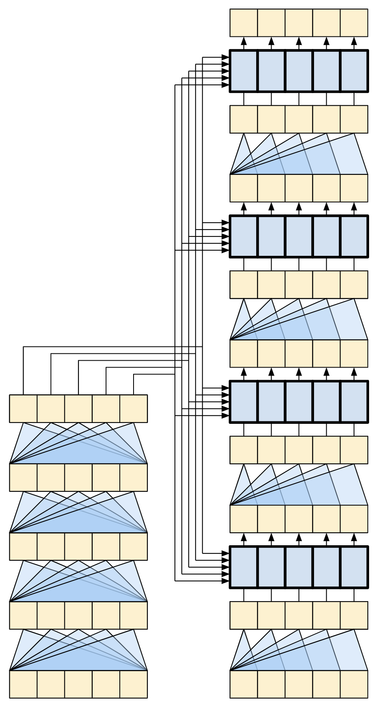
Figure 6 - The Original Transformer Diagram|A Representation of a 4-layer Transformer
Each of the components in these two diagrams will be explained as you progress through the tutorial.
7.1.3.1 The Embedding and Positional Encoding Layer
The inputs to both the encoder and decoder use the same embedding and positional encoding logic.
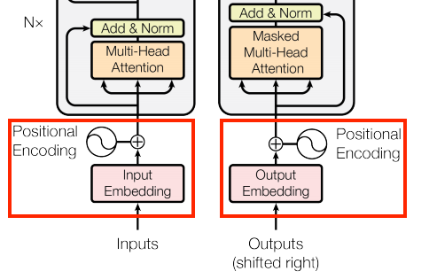
Figure 7 - Embedding and Positional Embedding
Given a sequence of tokens, both the input tokens (Portuguese) and target tokens (English) have to be converted to vectors using a torch.nn.Embedding layer.
The attention layers used throughout the model see their input as a set of vectors, with no order. Since the model doesn't contain any recurrent or convolutional layers. It needs some way to identify word order, otherwise it would see the input sequence as a bag of words instance, how are you, how you are, you how are, and so on, are indistinguishable.
A Transformer adds a "Positional Encoding" to the embedding vectors. It uses a set of sines and cosines at different frequencies (across the sequence). By definition nearby elements will have similar position encodings.
The original paper uses the following formula for calculating the positional encoding:
Note: The code below implements it, but instead of interleaving the sines and cosines, the vectors of sines and cosines are simply concatenated. Permuting the channels like this is functionally equivalent, and just a little easier to implement and show in the plots below.
def positional_encoding(length, depth):
depth = depth / 2
# (seq, 1)
positions = torch.arange(length).unsqueeze(1)
# (1, depth)
depths = torch.arange(int(depth)).unsqueeze(0) / depth
# (1, depth)
angle_rates = 1 / (10000 ** depths)
# (pos, depth)
angle_rads = positions * angle_rates
pos_encoding = torch.cat([torch.sin(angle_rads), torch.cos(angle_rads)], axis=-1)
return pos_encoding.float()The position encoding function is a stack of sines and cosines that vibrate at different frequencies depending on their location along the depth of the embedding vector. They vibrate across the position axis.
Visualize the values of the first 5 dimensions at different positions:
pe = positional_encoding(length=100, depth=64)
assert pe.shape == (100, 64)
for i in range(5):
pyplot.plot(pe[:, i].numpy(), label=f'dim {i}')
pyplot.xlabel('Position')
pyplot.ylabel('Encoding Value')
pyplot.legend()
pyplot.grid(True)
pyplot.show()The position encoding function is a stack of sines and cosines that vibrate at different frequencies depending on their location along the depth of the embedding vector. They vibrate across the position axis.
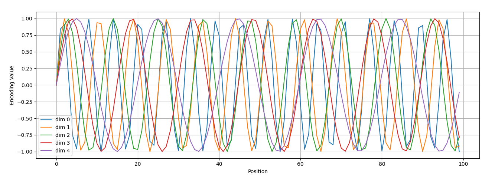
Figure 8 - Positional Encoding
So use this to create a PositionEmbedding layer that looks-up a token's embedding vector and adds the position vector:
class PositionalEmbedding(torch.nn.Module):
def __init__(self, vocab_size, d_model, pad_token_id, max_len=2048):
super().__init__()
self.d_model = d_model
self.embedding = torch.nn.Embedding(
vocab_size, d_model, padding_idx=pad_token_id
)
pe = positional_encoding(length=max_len, depth=d_model)
self.register_buffer("pos_encoding", pe)
def forward(self, x):
# x shape: (batch_size, seq_len)
seq_len = x.size(1)
# This factor sets the relative scale of the embedding and positonal_encoding.
x_embed = self.embedding(x) * math.sqrt(self.d_model)
x_embed = x_embed + self.pos_encoding[:seq_len, :].unsqueeze(dim=0)
return x_embedInitializes a PositionalEmbedding layer and applies it to a batch of tokenized input sequences:
pe_layer = PositionalEmbedding(vocab_size=len(tokenizer),
d_model=512,
pad_token_id=tokenizer.pad_token_id)
sample_output = pe_layer(sample_batch['input_ids'])
# (batch_size, seq_len, d_model)
print(sample_output.shape)torch.Size([16, 128, 512])
7.1.3.2 Add and Normalize
These "Add & Norm" blocks are scattered throughout the model. Each one joins a residual connection and runs the result through a LayerNormalization layer.
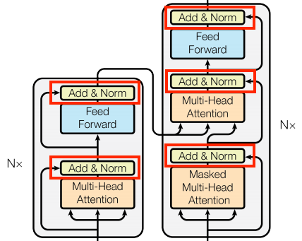
Figure 9 - Add and Normalize
The easiest way to organize the code is around these residual blocks. The following sections will define custom layer classes for each.
The residual "Add & Norm" blocks are included so that training is efficient. The residual connection provides a direct path for the gradient (and ensures that vectors are updated by the attention layers instead of replaced), while the normalization maintains a reasonable scale for the outputs.
7.1.3.3 The Base Attention Layer
Attention layers are used throughout the model. These are all identical except for how the attention is configured. Each one contains a torch.nn.MultiheadAttention , a torch.nn.LayerNorm and a add operation.
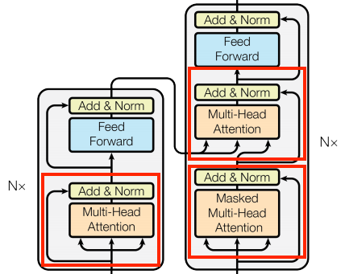
Figure 10 - The Base Attention Layer
To implement these attention layers, start with a simple base class that just contains the component layers. Each use-case will be implemented as a subclass. It's a little more code to write this way, but it keeps the intention clear.
class BaseAttention(torch.nn.Module):
def __init__(self, d_model, num_heads, dropout_rate, **kwargs):
super().__init__()
self.mha = torch.nn.MultiheadAttention(
embed_dim=d_model,
num_heads=num_heads,
dropout=dropout_rate,
batch_first=True,
**kwargs,
)
self.layernorm = torch.nn.LayerNorm(normalized_shape=d_model)Before you get into the specifics of each usage, here is a quick refresher on how attention works:
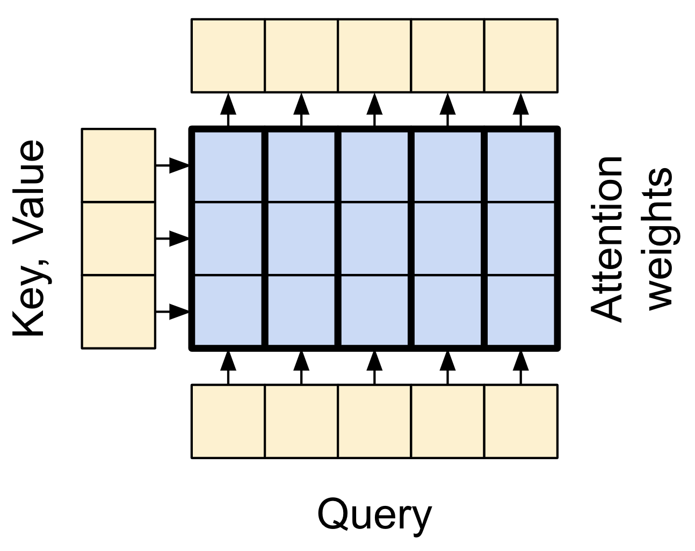
Figure 11 - The Base Attention Layer
There are two inputs:
The query sequence; the sequence being processed; the sequence doing the attending (bottom).
The context sequence; the sequence being attended to (left).
The output has the same shape as the query-sequence.
The common comparison is that this operation is like a dictionary lookup. A fuzzy, differentiable, vectorized dictionary lookup.
Here's a regular python dictionary, with 3 keys and 3 values being passed a single query.
d = {'color': 'blue', 'age': 22, 'type': 'pickup'}
result = d['color']
The querys is what you're trying to find.
The keys what sort of information the dictionary has.
The value is that information.
When you look up a query in a regular dictionary, the dictionary finds the matching key , and returns its associated value . The query either has a matching key or it doesn't. You can imagine a fuzzy dictionary where the keys don't have to match perfectly. If you looked up d["species"] in the dictionary above, maybe you'd want it to return "pickup" since that's the best match for the query.
An attention layer does a fuzzy lookup like this, but it's not just looking for the best key. It combines the values based on how well the query matches each key .
How does that work? In an attention layer the query , key , and value are each vectors. Instead of doing a hash lookup the attention layer combines the query and key vectors to determine how well they match, the "attention score". The layer returns the average across all the values , weighted by the "attention scores".
Each location the query-sequence provides a query vector. The context sequence acts as the dictionary. At each location in the context sequence provides a key and value vector. The input vectors are not used directly, the torch.nn.MultiHeadAttention layer includes torch.nn.Dense layers to project the input vectors before using them.
7.1.3.4 The Cross Attention Layer
At the literal center of the Transformer is the cross-attention layer. This layer connects the encoder and decoder. This layer is the most straight-forward use of attention in the model, it performs the same task as the attention block in the NMT with attention tutorial.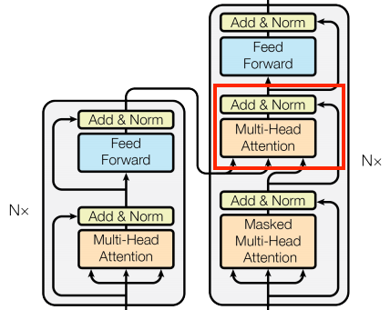
Figure 12 - The Cross Attention Layer
To implement this you pass the target sequence x as the query and the context sequence as the key/value when calling the mha layer:
class CrossAttention(BaseAttention):
def forward(self, x, context):
# x: (batch, traget_seq_len, d_model)
# context: (batch, source_seq_len, d_model)
attn_output, attn_scores = self.mha(
query=x,
key=context,
value=context,
need_weights=True,
average_attn_weights=False
)
# Cache the attention scores for plotting later.
self.last_attn_scores = attn_scores
# Residual connection and layer norm.
x = x + attn_output
x = self.layernorm(x)
return xThe caricature below shows how information flows through this layer. The columns represent the weighted sum over the context sequence.
For simplicity the residual connections are not shown.
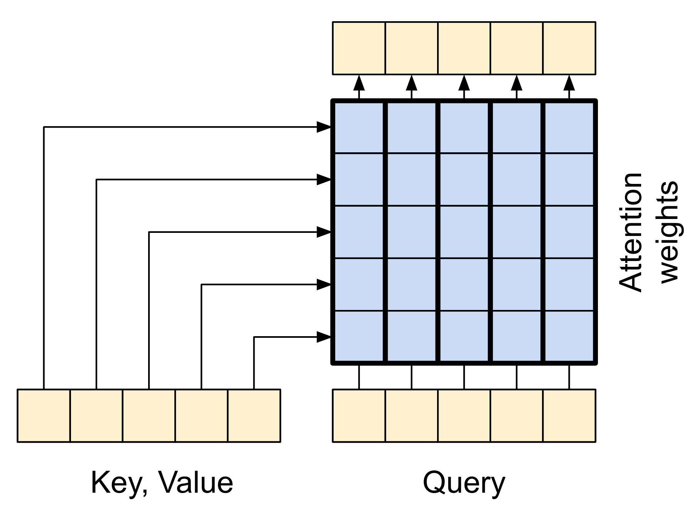
Figure 13 - The Cross Attention Layer Diagram
The output length is the length of the query sequence, and not the length of the context key/value sequence.
The diagram is further simplified, below. There's no need to draw the entire "Attention weights" matrix. The point is that each query location can see all the key/value pairs in the context, but no information is exchanged between the queries.
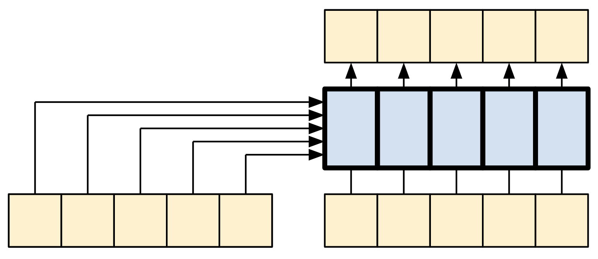
Figure 14 - The Cross Attention Layer Diagram Simplified
Test run it on sample inputs:
cross_attn = CrossAttention(d_model=512, num_heads=4, dropout_rate=0.1)
# target sequence
x = torch.randn(16, 128, 512)
# source sequence (e.g., encoder output)
context = torch.randn(16, 64, 512)
output = cross_attn(x, context)
assert output.shape == (16, 128, 512)7.1.3.5 The Global Self-attention Layer
This layer is responsible for processing the context sequence, and propagating information along its length.
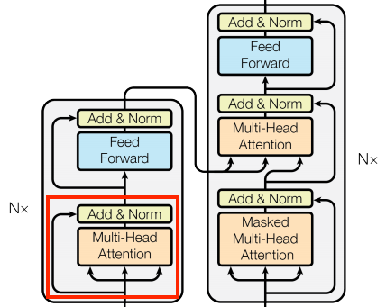
Figure 15 - The Global Self-attention Layer
Since the context sequence is fixed while the translation is being generated, information is allowed to flow in both directions.
Before Transformers and self-attention, models commonly used RNNs or CNNs to do this task:
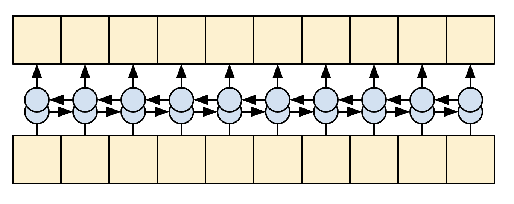
Figure 16 - Bidirectional RNN
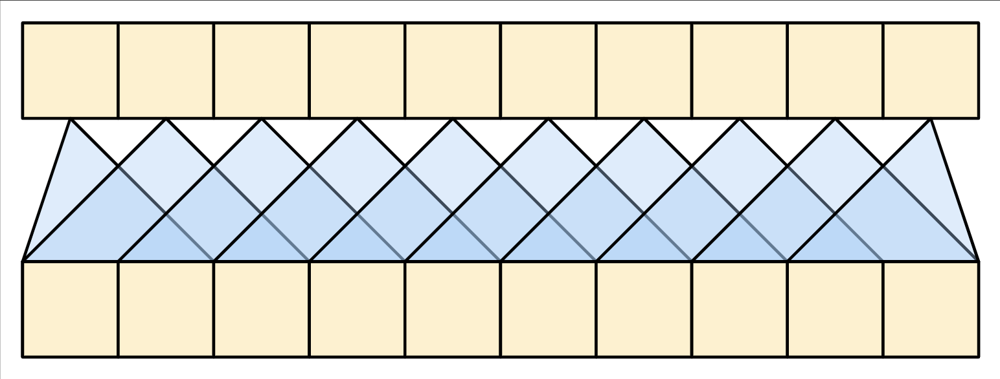
Figure 17 - Bidirectional CNN
RNNs and CNNs have their limitations:
The RNN allows information to flow all the way across the sequence, but it passes through many processing steps to get there (limiting gradient flow). These RNN steps have to be run sequentially and so the RNN is less able to take advantage of modern parallel devices.
In the CNN each location can be processed in parallel, but it only provides a limited receptive field. The receptive field only grows linearly with the number of CNN layers, You need to stack a number of Convolution layers to transmit information across the sequence (Wavenet reduces this problem by using dilated convolutions).
The global self-attention layer on the other hand lets every sequence element directly access every other sequence element, with only a few operations, and all the outputs can be computed in parallel.
To implement this layer you just need to pass the target sequence, x, as both the query, and value arguments to the mha layer:
class GlobalSelfAttention(BaseAttention):
def forward(self, x):
# query = key = value = x
# # x: (batch, seq_len, d_model)
attn_output, attn_scores = self.mha(
query=x, key=x, value=x, need_weights=True, average_attn_weights=False
)
# Cache the attention scores for plotting later.
self.last_attn_scores = attn_scores
# Residual connection and layer norm.
x = x + attn_output
x = self.layernorm(x)
return x
attn = GlobalSelfAttention(d_model=512, num_heads=4, dropout_rate=0.1)
x = torch.randn(16, 128, 512)
output = attn(x)
assert output.shape == (16, 128, 512)Sticking with the same style as before you could draw it like this:
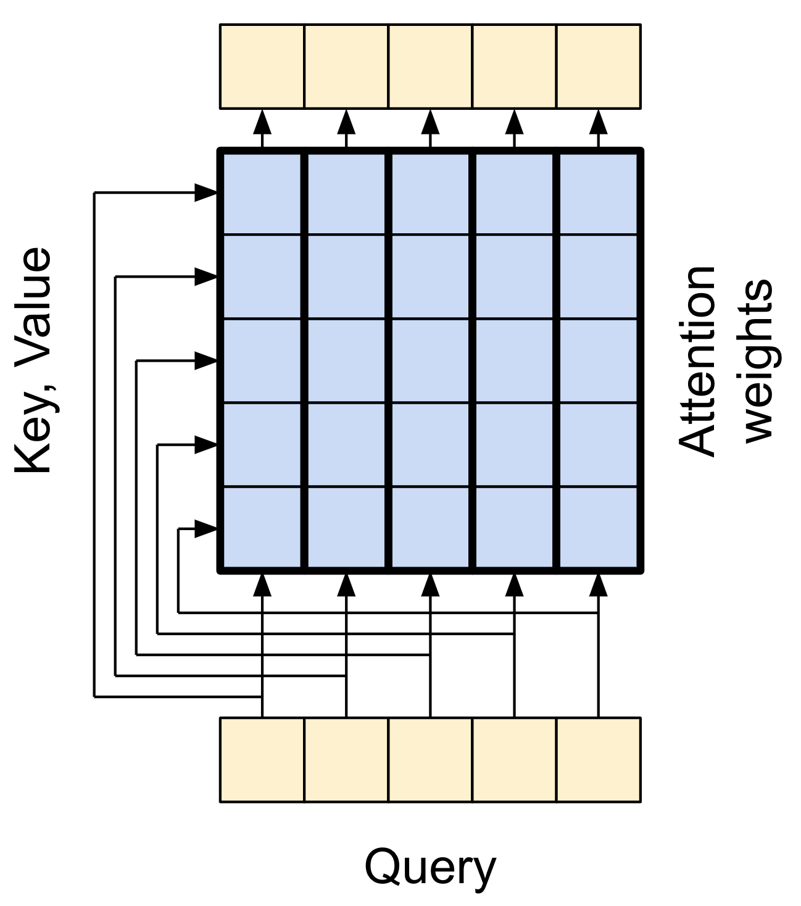
Figure 18 - The Global Self-attention Layer Diagram
Again, the residual connections are omitted for clarity. It's more compact, and just as accurate to draw it like this:
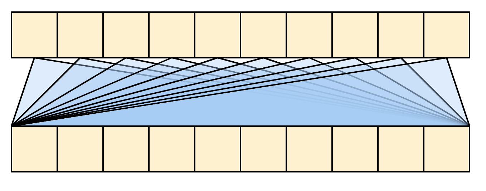
Figure 19 - The Global Self-attention Layer Diagram Simplified
7.1.3.6 The Causal Self-attention Layer
This layer does a similar job as the global self-attention layer, for the output sequence:
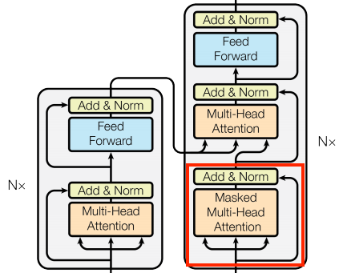
Figure 20 - The Causal Self-attention Layer
This needs to be handled differently from the encoder's global self-attention layer.
Like the text generation tutorial, and the NMT with attention tutorial, Transformers are an "autoregressive" model: They generate the text one token at a time and feed that output back to the input. To make this efficient, these models ensure that the output for each sequence element only depends on the previous sequence elements; the models are "causal".
A single-direction RNN is causal by definition. To make a causal convolution you just need to pad the input and shift the output so that it aligns correctly.
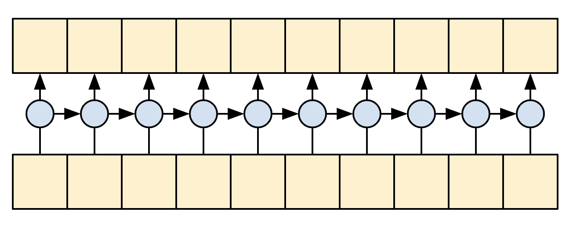
Figure 21 - Causal RNN
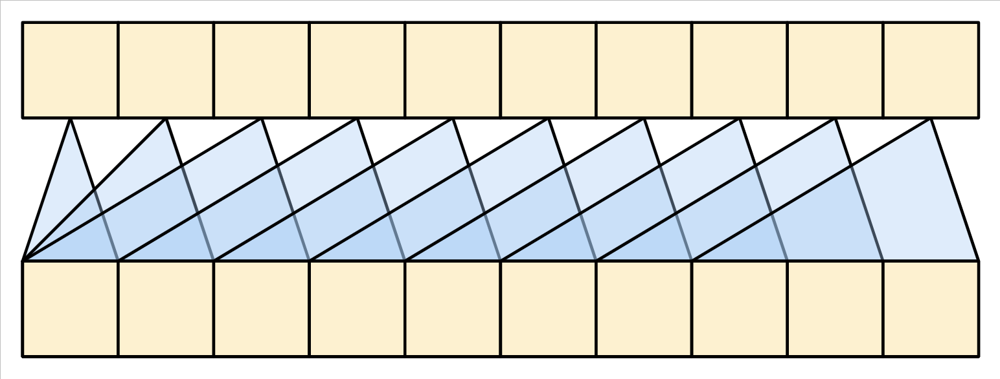
Figure 21 - Causal CNN
A causal model is efficient in two ways:
In training, it lets you compute loss for every location in the output sequence while executing the model just once.
During inference, for each new token generated you only need to calculate its outputs, the outputs for the previous sequence elements can be reused.
To build a causal self-attention layer, you need to use an appropriate mask when computing the attention scores and summing the attention values.
This is taken care of automatically if you use torch.nn.Transformer.generate_square_subsequent_mask to generate a mask and pass is_causal = True to the MultiHeadAttention layer when you call it:
class CausalSelfAttention(BaseAttention):
def forward(self, x):
# query = key = value = x
# x: (batch, seq_len, d_model)
causal_mask = torch.nn.Transformer.generate_square_subsequent_mask(x.size(1))
attn_output, attn_scores = self.mha(
query=x,
key=x,
value=x,
need_weights=True,
average_attn_weights=False,
is_causal=True,
attn_mask=causal_mask,
)
# Cache the attention scores for plotting later.
self.last_attn_scores = attn_scores
# Residual connection and layer norm.
x = x + attn_output
x = self.layernorm(x)
return xThe causal mask ensures that each location only has access to the locations that come before it:
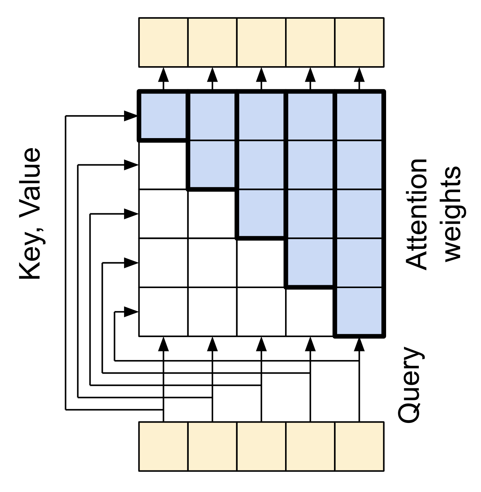
Figure 22 - Casual Attention Layer Diagram
Again, the residual connections are omitted for simplicity. The more compact representation of this layer would be:
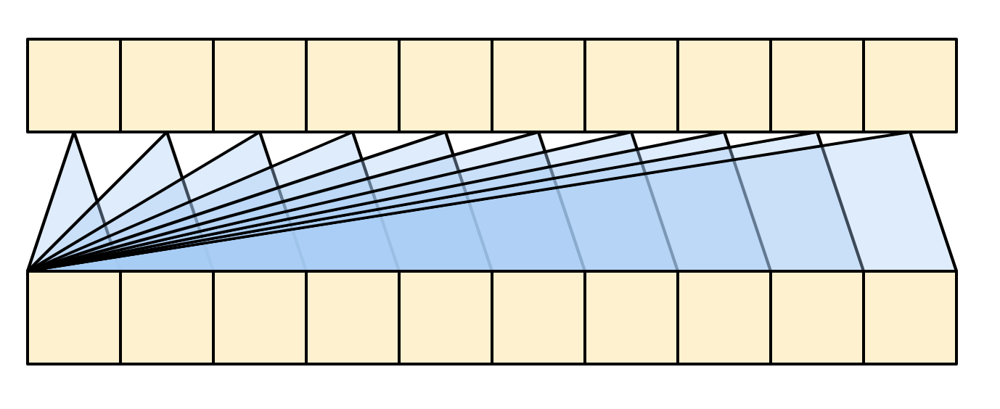
Figure 23 - Casual Attention Layer Diagram Simplified
Test out the layer:
attn = CausalSelfAttention(d_model=512, num_heads=4, dropout_rate=0.1)
x = torch.randn(16, 128, 512)
output = attn(x)
assert output.shape == (16, 128, 512)The output for early sequence elements doesn't depend on later elements, so it shouldn't matter if you trim elements before or after applying the layer:
casual_attn_without_dropout = CausalSelfAttention(d_model=512, num_heads=4, dropout_rate=0.0)
x = torch.randn(16, 128, 512)
out1 = casual_attn_without_dropout(x[:, :3])
out2 = casual_attn_without_dropout(x)[:, :3]
torch.testing.assert_close(out1, out2, rtol=1e-5, atol=1e-5)
print("Causal self-attention without dropout works as expected.")Causal self-attention without dropout works as expected.
7.1.3.7 The Feed Forward Network
The transformer also includes this point-wise feed-forward network in both the encoder and decoder:
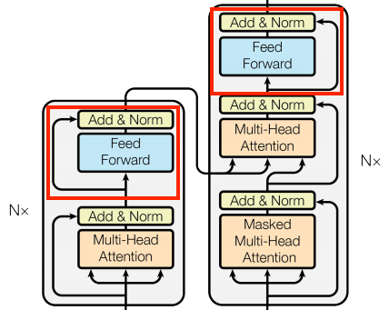
Figure 24 - The Feed Forward Network
The network consists of two linear layers (torch.nn.Dense) with a ReLU activation in-between, and a dropout layer. As with the attention layers the code here also includes the residual connection and normalization:
class FeedForward(torch.nn.Module):
def __init__(self, d_model, d_ff, dropout_rate=0.1):
super().__init__()
self.linear1 = torch.nn.Linear(d_model, d_ff)
self.relu = torch.nn.ReLU()
self.dropout = torch.nn.Dropout(dropout_rate)
self.linear2 = torch.nn.Linear(d_ff, d_model)
self.layernorm = torch.nn.LayerNorm(normalized_shape=d_model)
def forward(self, x):
# x: (batch, seq_len, d_model)
x = self.linear1(x)
x = self.relu(x)
x = self.dropout(x)
x = self.linear2(x)
# Residual connection and layer norm.
x = x + self.layernorm(x)
return xTest the layer, the output is the same shape as the input:
ffn = FeedForward(d_model=512, d_ff=2048, dropout_rate=0.1)
x = torch.randn(16, 128, 512)
output = ffn(x)
assert output.shape == (16, 128, 512)7.1.3.8 The Encoder Layer
The encoder contains a stack of \(N\) encoder layers. Where each EncoderLayer contains a GlobalSelfAttention and FeedForward layer:
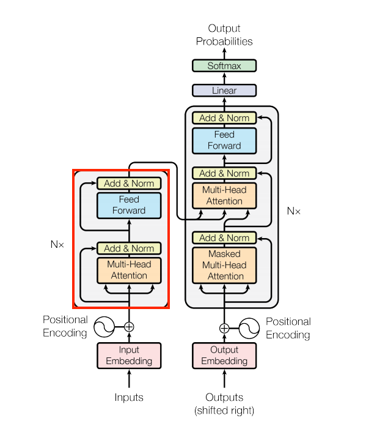
Figure 25 - The Encoder Layer
Here is the definition of the EncoderLayer :
class EncoderLayer(torch.nn.Module):
def __init__(self, d_model, num_heads, d_ff, dropout_rate=0.1):
super().__init__()
self.self_attn = GlobalSelfAttention(d_model, num_heads, dropout_rate)
self.ffn = FeedForward(d_model, d_ff, dropout_rate)
def forward(self, x):
# x: (batch, seq_len, d_model)
x = self.self_attn(x)
x = self.ffn(x)
return xAnd a quick test, the output will have the same shape as the input:
sample_encoder_layer = EncoderLayer(d_model=512, num_heads=4, d_ff=2048, dropout_rate=0.1)
x = torch.randn(16, 128, 512)
output = sample_encoder_layer(x)
assert output.shape == (16, 128, 512)7.1.3.9 The Encoder
Next build the encoder.
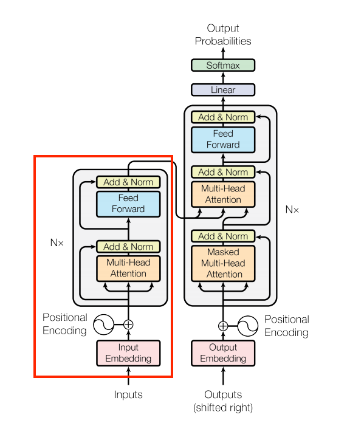
Figure 26 - The Encoder
The encoder consists of:
A
PositionalEmbeddinglayer to convert the input tokens to vectors.A stack of
EncoderLayerlayers.
class Encoder(torch.nn.Module):
def __init__(self, d_model, num_heads, d_ff, num_layers, dropout_rate=0.1):
super().__init__()
self.pos_embedding = PositionalEmbedding(
vocab_size=tokenizer.vocab_size,
d_model=d_model,
pad_token_id=tokenizer.pad_token_id,
)
self.layers = torch.nn.ModuleList(
[
EncoderLayer(d_model, num_heads, d_ff, dropout_rate)
for _ in range(num_layers)
]
)
self.layernorm = torch.nn.LayerNorm(normalized_shape=d_model)
self.dropout = torch.nn.Dropout(dropout_rate)
def forward(self, x):
# x is token-IDs shape: (batch, seq_len)
# (batch_size, seq_len, d_model)
x = self.pos_embedding(x)
# Add dropout.
x = self.dropout(x)
# Apply each encoder layer sequentially
for layer in self.layers:
x = layer(x)
x = self.layernorm(x)
# (batch_size, seq_len, d_model)
return xTest the encoder:
# Instaniate the encoder.
sample_encoder = Encoder(
d_model=512, num_heads=4, d_ff=2048, num_layers=6, dropout_rate=0.1
)
# Create a sample input (batch_size=16, seq_len=128)
x = torch.randint(0, tokenizer.vocab_size, (16, 128))
assert x.shape == (16, 128)
# Forward pass through the encoder.
output = sample_encoder(x)
assert output.shape == (16, 128, 512)7.1.3.10 The Decoder Layer
The decoder's stack is slightly more complex, with each DecoderLayer containing a CausalSelfAttention , a CrossAttention , and a FeedForward layer:
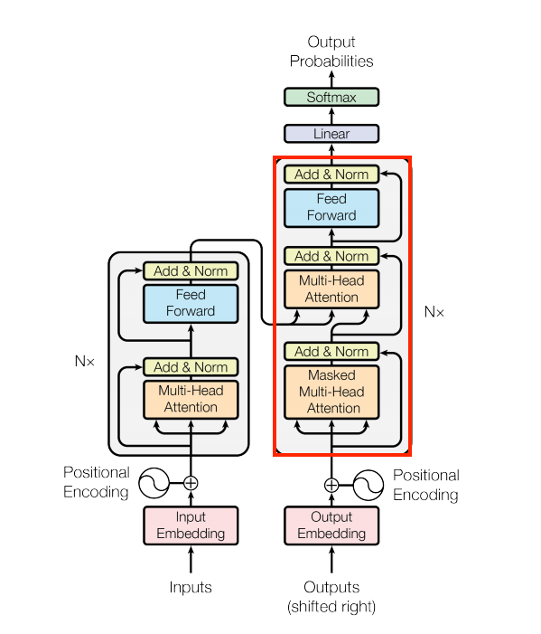
Figure 27 - The Decoder Layer
class DecoderLayer(torch.nn.Module):
def __init__(self, d_model, num_heads, d_ff, dropout_rate=0.1):
super().__init__()
self.causal_self_attn = CausalSelfAttention(d_model, num_heads, dropout_rate)
self.cross_attn = CrossAttention(d_model, num_heads, dropout_rate)
self.ffn = FeedForward(d_model, d_ff, dropout_rate)
def forward(self, x, context):
# x: (batch, seq_len, d_model)
# context: (batch, source_seq_len, d_model)
x = self.causal_self_attn(x)
x = self.cross_attn(x, context)
# Cache the last attention scores for plotting later
self.last_attn_scores = self.cross_attn.last_attn_scores
# Apply the feed-forward network
x = self.ffn(x)
return xTest the decoder layer:
sample_decoder_layer = DecoderLayer(
d_model=512, num_heads=4, d_ff=2048, dropout_rate=0.1
)
# Create a sample input (batch_size=16, seq_len=128)
x = torch.randn(16, 128, 512)
# Create a sample context (batch_size=16, source_seq_len=64)
context = torch.randn(16, 64, 512)
# Forward pass through the decoder layer.
output = sample_decoder_layer(x, context)
assert output.shape == (16, 128, 512)7.1.3.11 The Ddecoder
Similar to the Encoder , the Decoder consists of a PositionalEmbedding , and a stack of DecoderLayers :
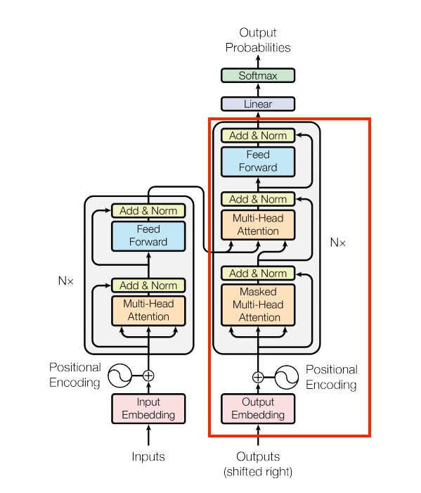
Figure 28 - The Decoder
Define the decoder:
7.1.4 The Transformer
7.1.5 Training
7.1.6 Run Inference
7.1.7 Create Attention Plots
7.1.8 Export the Model
7.1.9 Conclusion
In this tutorial you learned about:
The Transformers and their significance in machine learning
Attention, self-attention and multi-head attention
Positional encoding with embeddings
The encoder-decoder architecture of the original Transformer
Masking in self-attention
How to put it all together to translate text
The downsides of this architecture are:
For a time-series, the output for a time-step is calculated from the entire history instead of only the inputs and current hidden-state. This may be less efficient.
If the input has a temporal/spatial relationship, like text or images, some positional encoding must be added or the model will effectively see a bag of words.
If you want to practice, there are many things you could try with it. For example:
Use a different dataset to train the Transformer.
Create the "Base Transformer" or "Transformer XL" configurations from the original paper by changing the hyperparameters.
Use the layers defined here to create an implementation of BERT
Use Beam search to get better predictions.
There are a wide variety of Transformer-based models, many of which improve upon the 2017 version of the original Transformer with encoder-decoder, encoder-only and decoder-only architectures.